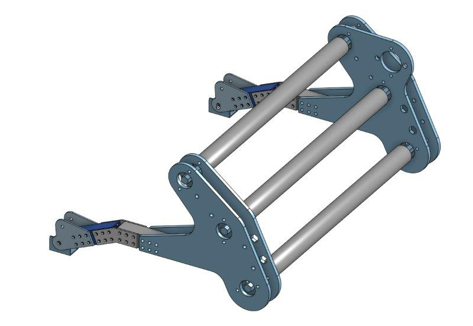

FRC 2020: Infinite Recharge
Team 3648: Sparta Robotica's entry into the 2020 First Robotics Competition.
I was responsible for the robot's software, as well as the mechanical development of two subsystems: the turreted shooter and the powercell intake.
This bot placed 8th in the Utah regional and was being prepared for the Denver regional when it was canceled due to COVID-19.
Check out the CAD on OnShape
And the code on Github
Read the write up
Infinite Recharge: Game Overview
Shamelessly stolen from Wikipedia:
The Infinite Recharge game involves two alliances of three teams each, with each team controlling a robot and performing specific tasks on a field to score points. The game centers around a futuristic city theme involving two alliances consisting of three teams each competing to perform various tasks, including shooting foam balls known as Power Cells into high and low goals to activate a Shield Generator, manipulating a Control Panel to activate this shield, and returning to the Shield Generator to park or climb at the end of the match.
Planning and prioritizing
Beginning the season, my team's goal was to qualify for the national championship in Houston. We had only made it one time before (2017). After reading over the game manual, we discussed what our robot needed to do to achieve that goal. We decided that to be competitive we would need to be able to do everything in the game, and we need to be able to shoot and climb consistently and quickly. To those ends, we created a ranked list of our subsystem priorities:
- Shooter
- Climber
- Intake / Power cell indexer
- Color wheel
Given the importance and difficulty that we assessed each subsystem, we computed a value proposition and assigned team members to groups accordingly.
My Responsibilities
Given that I was one of only two members with four years of experience, I was assigned to "roam" between the groups, helping out and taking on projects where needed. I was also the most experienced team member when it came to CAD, so I ended up taking on several projects.
Turreted shooter
My first project was the shooter. To begin the design, I CAD'd a prototype "half-circle" shooter that was designed to allow for rapidly testing different compression of the ball while it was shot. By moving the plexiglass panel backward or forward in the slots, we were able to collect data on what changing compression did to the accuracy and power of the shots. In the end, we determined that 2.5" was the optimal level of compression. We also tested a variety of wheels and ended up settling for a pair of 4" green stealth wheels.


At this point, we determined that we wanted to be able to shoot into the high goal from the trench run at about 60% power on the motors. This would limit the impact on the battery and give us flexibility with the range and wear. The immediate problem was the single CIM motor we were using. It just wasn't powerful enough for that range. We prototyped solutions using two 775 redline motors but ended up going for a single NEO Brushless motor on a 1:1.6 belt ratio. The NEO gave a great increase in torque and came bundled with an encoder for our control loops.
With the basic shooter concept finalized, I began CADing a rotating platform to mount it on. We had determined that having a turreted shooter would be valuable for avoiding defense, make us more accurate, and make our cycles more efficient. Through researching other team's solutions to the problem, I settled on a simple bearing stack that would run along the inside of a piece of aluminum.
By placing four bearing stacks around the outside of a circle, they could move smoothly around a plate mounted to the frame. I added several removable sections of gear tooth that could be attached to the turret head and would mesh with the gears we already had in the shop. I cut all the pieces on the team laser cutter and had a prototype built soon after.

Final turret design, cut in aluminum with delrin gear teeth
After many design iterations and much testing, I had finals cut out of aluminum and we tested the final assembly. It functioned very well, consistently hitting the top goal even from behind the control panel.

Shooter + turret final assembly
Next, I moved on to integrating the system with the rest of the robot. At this point, we had finalized the design for our hopper, and we were just missing a way to transition the power cells from the hopper into the turret. I CADed a kicker wheel to pull balls up against a curved piece of plastic and into the shooter, intending to keep the feed consistent. The design is based on bent sheet metal as much as possible, to keep fabrication simple and efficient.
The kicker wheel design worked well, and we were soon able to launch our first power cells.
Kicker wheel assembled in CAD
The final feature that I wanted to add was an adjustable hood. As part of the 2020 game, there were protected shooting areas in the trench run (where we planned to do most of our shooting) and right below the goal (aka the "bumper shot"). To hit the bumper shot we would need the backplate of the shooter to hinge backward and allow for a higher angle. I designed the "hood" of our shooter to be actuated with a small pneumatic cylinder, but initial testing showed that it was too weak to resist the ball, and would make our shots inaccurate. To fix that problem, I designed a locking linkage where two pieces of Delrin would "lock" in the upright position against the force of the ball, making it strong yet easily actuated by the pneumatic. The addition of the adjustable hood allowed us to shoot from anywhere on the field and gave us the flexibility to play as either a forward or long shooter.
The hood back, then forward (pneumatic not shown in the CAD)
Intake
I made a very rapid prototype intake at the beginning of the season to give some less experienced team members a starting place to work from.

Early prototype of the intake (feat. Shalom)
Due to numerous difficulties, I took back over the subsystem near the end of the build season.
I wanted a full-length intake that pulled in any power cell it contacted. I had learned from previous years that spinning, wheeled intakes are almost always the way to go, so I began CADing a simple rolling wheel design. After testing, I moved on to integrating it with the rest of the robot. The main difficulty was packaging it within the area it was allotted. The intake needed to swing up into the frame perimeter while avoiding both the climber arms and the hopper. My design used small pneumatic cylinders to retract and extend the intake, which would fold over the hopper.
I decided to use a 775 redline on a 16:1 reduction to power the rollers. A 775 offered a perfect balance of power (jam resistance) and speed. I decided on a triple roller design because the initial two roller design was allowing power cells to escape out of the hopper.
We broke our first version at our local scrimmage, so I redesigned to create an intended point of failure along a row of rivets holding the intake onto the pivot arms. That way, when the intake got abused (like we knew it would be) it would keep working and be easy to repair.
The final design was cut out of 1/4" Delrin and 1"x1" aluminum stock.
Final intake design in CAD
Programming
This year we took on a new programming mentor who introduced me to the idea of using XML files for configuration of the robot without redeploying code. Using the XML files, it was possible to change out driver control profiles, IO settings, and tune variables like PID loops without inefficient redeploys. I implemented XML parsing and many other features like modular subsystems, integrated PID control, and customizable IO into a framework I intended to pass down to my team. Unfortunately, the season got cut short and I wasn't able to finish the framework or implement many of the features I was planning, like pure pursuit path following for auto.
This was the first year that the team has used computer vision effectively. We bought a Limelight camera for each robot, and I programmed an algorithm that automatically targeted, set the flywheel speed, and shot a power cell at the press of a button from any range or angle. It worked great at our competition at Utah and allowed for a very consistent three-ball auto.
All of my code can be found on my GitHub.
Driving
This was my third year as a driver and I was able to participate in a local scrimmage and the Utah regional. At the Utah regional were chosen by the second seed alliance, but unfortunately lost the first round of playoffs in an upset.
The glorious 3648 drive team on the steps of the Maveric Center in Salt Lake City, UT
Preseason Project: Elevator Bot
An individual project created to learn about computer aided design and fabrication.
Taken from inception to reality in under a month.
The first CAD designed system created by 3648, bringing the team inline with competitive standards and setting precedent for future seasons.
Check out the CAD on OnShape
And the code on Github
Read the write up
Preseason Project
Before the season began, I experimented with the CAD program OnShape. I decided to model and build an elevator as practice before the real season. One of our mentors had recently bought a CNC router and was happy to help me fabricate the parts for my design. In just over four weeks, I designed and built a functional elevator robot with the help of a few friends. The elevator worked phenomenally, and it was the first subsystem to ever be produced by 3648 using computer-aided design.


The CAD model for the elevator bot next to the fabricated version
This project proved the feasibility of using CAD in our shop and paved the way for using CAD for design and rapid prototyping for the rest of the season.